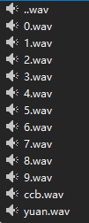
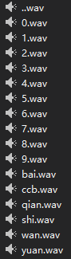

最近在做一个语音播报功能，开始是用Speech做的。感觉效果还不错，直接可以文字转语音，然后播报出来。但是后面再测试机器上，发现播放的是英语，搜索过后发现需要语音支持。还有可能有些系统整个语音功能都可能被阉割了，所以只能另外想办法了。
另起思路：其实只有数字变化的，其他语音文字一般是固定的。那么我们可以把0-9单独录制为10个wav文件，然后把金额数字拆分为char，播放对应的文件不就OK了吗！说干就干：

先把需要的文件录制出来，具体实现代码如下：
Task.Run(() =>
{
decimal payAmt = 123.56M;
string payString = payAmt.ToString("F2");
//播放固定的前缀语音“龙支付收款”
using (SoundPlayer simpleSound = new SoundPlayer($"{Application.StartupPath}\\auido\\ccb.wav"))
{
simpleSound.Play();
//这里需要等待，具体时间为语音文件的长度
System.Threading.Thread.Sleep(1450);
foreach (var item in payString.ToArray())
{
//播放具体数字
simpleSound.SoundLocation = $"{Application.StartupPath}\\auido\\{item}.wav";
simpleSound.Play();
System.Threading.Thread.Sleep(400);
}
//播放元
simpleSound.SoundLocation = $"{Application.StartupPath}\\auido\\yuan.wav";
simpleSound.Play();
}
});看起来功能已经实现了，只是听起来感觉有点迟钝的样纸，但是先这样吧。提交给测试了，后面测试过来说这个声音怎么没有单位啊，能不能加上单位呢。嗯！！！可以。
于是开始实现数字播报加单位，先去找了段数字转大字文字的功能代码参考了下，其实逻辑差不多，然后稍微改造下就OK了，思路还是一样的，先录制语音文件，需要增加单位语音文件：十百千万

然后把需要转换的数字Tostring("F2")，这里不要转N2，不然会有逗号分隔的，我这里设计只支持到小于一亿元的播报。
直接上代码
public void PayAuido(decimal payMoney)
{
if (payMoney >= 100000000 || payMoney == 0)
{
return;
}
Task.Run(() =>
{
List<string> payAuidoUrls = new List<string>();
string payString = payMoney.ToString("F2");
//如果小于11位，则补零
if (payString.Length < 11)
{
payString = payString.PadLeft(11, '0');
}
string payWan = payString.Substring(0, 4);//取得'万'单元
string payYuan = payString.Substring(4, 4);//取得'元'单元
string payNum = payString.Substring(9, 2);//取得小数部分
//处理万
List<string> payAuidoUrlsWan = Convert(payWan);
if (payAuidoUrlsWan.Count > 0)
{
payAuidoUrlsWan.Add($"{Application.StartupPath}\\auido\\wan.wav");
}
//处理元
List<string> payAuidoUrlsYuan = Convert(payYuan);
//元第一个字符是否为‘零’
if (payAuidoUrlsWan.Count > 0 && payAuidoUrlsYuan.Count > 0 && payString[4] == '0')
{
payAuidoUrlsWan.Add($"{Application.StartupPath}\\auido\\0.wav");
}
payAuidoUrls.AddRange(payAuidoUrlsWan);
payAuidoUrls.AddRange(payAuidoUrlsYuan);
//处理小数位
if (payNum != "00")
{
//如果只有小数，则添加‘零’
if (payAuidoUrls.Count == 0)
{
payAuidoUrls.Add($"{Application.StartupPath}\\auido\\0.wav");
}
payAuidoUrls.Add($"{Application.StartupPath}\\auido\\..wav");
payAuidoUrls.Add($"{Application.StartupPath}\\auido\\{payNum[0]}.wav");
//如果最后一位为‘零’，则不需要播报
if (payNum[1] != '0')
{
payAuidoUrls.Add($"{Application.StartupPath}\\auido\\{payNum[1]}.wav");
}
}
//添加元
payAuidoUrls.Add($"{Application.StartupPath}\\auido\\yuan.wav");
//播放“龙支付收款”
using (SoundPlayer simpleSound = new SoundPlayer($"{Application.StartupPath}\\auido\\ccb.wav"))
{
simpleSound.Play();
System.Threading.Thread.Sleep(1450);
foreach (string payAuidoUrl in payAuidoUrls)
{
//播放每个数字
simpleSound.SoundLocation = payAuidoUrl;
simpleSound.Play();
System.Threading.Thread.Sleep(400);
}
}
});
}
/// <summary>
/// 每四位数转换一次
/// </summary>
/// <param name="payValue">当前转换的金额</param>
/// <returns></returns>
public List<string> Convert(string payValue)
{
List<string> payAuidos = new List<string>();
//如果为四个零，则不需要播报
if (payValue == "0000")
{
return payAuidos;
}
char tmp0 = payValue[0];
char tmp1 = payValue[1];
char tmp2 = payValue[2];
char tmp3 = payValue[3];
//千位
if (tmp0 != '0')
{
payAuidos.Add($"{Application.StartupPath}\\auido\\{tmp0}.wav");
payAuidos.Add($"{Application.StartupPath}\\auido\\qian.wav");
}
else
{
payAuidos.Add($"{Application.StartupPath}\\auido\\0.wav");
}
//百位
if (tmp1 != '0')
{
payAuidos.Add($"{Application.StartupPath}\\auido\\{tmp1}.wav");
payAuidos.Add($"{Application.StartupPath}\\auido\\bai.wav");
}
else
{
//只添加一个零
if (tmp0 != '0')
{
payAuidos.Add($"{Application.StartupPath}\\auido\\0.wav");
}
}
//十位
if (tmp2 != '0')
{
payAuidos.Add($"{Application.StartupPath}\\auido\\{tmp2}.wav");
payAuidos.Add($"{Application.StartupPath}\\auido\\shi.wav");
}
else
{
//只添加一个零
if (tmp1 != '0')
{
payAuidos.Add($"{Application.StartupPath}\\auido\\0.wav");
}
}
//个位
if (tmp3 != '0')
{
payAuidos.Add($"{Application.StartupPath}\\auido\\{tmp3}.wav");
}
//如果第一个音频为零，则去掉
if (payAuidos[0].Contains("0.wav"))
{
payAuidos.RemoveAt(0);
}
//如果最后一个音频为零，则去掉
if (payAuidos[payAuidos.Count - 1].Contains("0.wav"))
{
payAuidos.RemoveAt(payAuidos.Count - 1);
}
return payAuidos;
}输入数字，既可转换为语音播报，其实思路很简单，就是把每个数字及单位对应的语音文件连续播放出来即可。DEMO下载